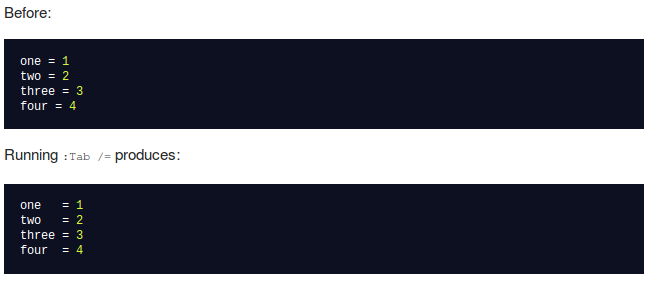
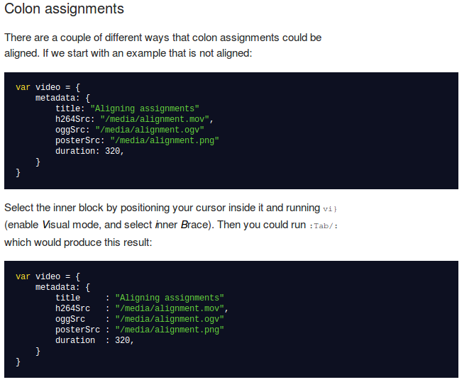
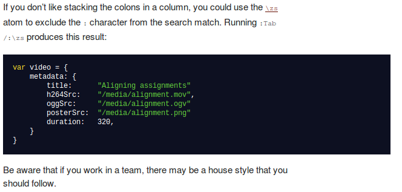
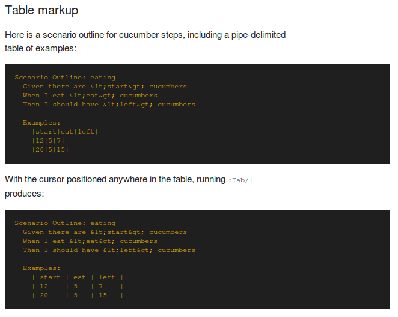
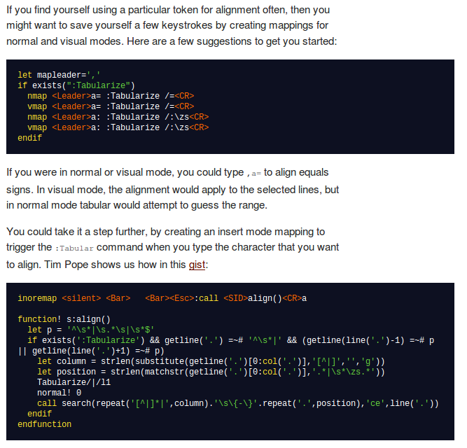

每次捣鼓电脑都会把电脑里面的配置丢得一塌糊涂，故将我用的vim插件及其github地址保存下来，以免丢失。
Manage your runtimepath
mkdir -p ~/.vim/autoload ~/.vim/bundle
curl -Sso ~/.vim/autoload/pathogen.vim \
https://raw.github.com/tpope/vim-pathogen/master/autoload/pathogen.vim
Add this to your .vimrc:
execute pathogen#infect()
https://github.com/tpope/vim-pathogen
cd ~/.vim/bundle
git clone https://github.com/vim-scripts/taglist.vim.git
let Tlist_Ctags_Cmd='/usr/bin/ctags'
let Tlist_Show_One_File=1
let Tlist_OnlyWindow=1
let Tlist_Use_Right_Window=0
let Tlist_Sort_Type='name'
let Tlist_Exit_OnlyWindow=1
let Tlist_Show_Menu=1
let Tlist_Max_Submenu_Items=10
let Tlist_Max_Tag_length=20
let Tlist_Use_SingleClick=0
let Tlist_Auto_Open=0
let Tlist_Close_On_Select=0
let Tlist_File_Fold_Auto_Close=1
let Tlist_GainFocus_On_ToggleOpen=0
let Tlist_Process_File_Always=1
let Tlist_WinHeight=10
let Tlist_WinWidth=18
let Tlist_Use_Horiz_Window=0
https://github.com/vim-scripts/taglist.vim
The NERD tree allows you to explore your filesystem and to open files and directories.
cd ~/.vim/bundle
git clone https://github.com/scrooloose/nerdtree.git
https://github.com/scrooloose/nerdtree
zencoding-vim is vim script support for expanding abbreviation like zen-coding(emmet).
cd ~/.vim/bundle
git clone http://github.com/mattn/zencoding-vim.git
Type ("_" is the cursor position):
html:5_
Then type "," (Ctrl + y + ','), you should see:
<!DOCTYPE HTML>
<html lang="en">
<head>
<meta charset="UTF-8">
<title></title>
</head>
<body>
_
</body>
</html>
https://github.com/mattn/zencoding-vim
cd ~/.vim/bundle
git clone https://github.com/ervandew/supertab.git
https://github.com/ervandew/supertab
cd ~/.vim/bundle
git clone https://github.com/vim-scripts/c.vim.git
(you should change the .html to .pdf to see the pdf file)
https://github.com/vim-scripts/c.vim
A few of quick commands to swtich between source files and header files quickly.
cd ~/.vim/bundle
git clone https://github.com/vim-scripts/a.vim.git
:A switches to the header file corresponding to the current file being edited (or vise versa)
:AS splits and switches
:AV vertical splits and switches
:AT new tab and switches
:AN cycles through matches
:IH switches to file under cursor
:IHS splits and switches
:IHV vertical splits and switches
:IHT new tab and switches
:IHN cycles through matches
<Leader>ih switches to file under cursor
<Leader>is switches to the alternate file of file under cursor (e.g. on <foo.h> switches to foo.cpp)
<Leader>ihn cycles through matches
https://github.com/vim-scripts/a.vim
Vim script for text filtering and alignment
cd ~/.vim/bundle
git clone git://github.com/godlygeek/tabular.git
    
https://github.com/godlygeek/tabular
C/C++ omni-completion with ctags database
cd ~/.vim/bundle
git clone https://github.com/vim-scripts/OmniCppComplete.git
https://github.com/vim-scripts/OmniCppComplete